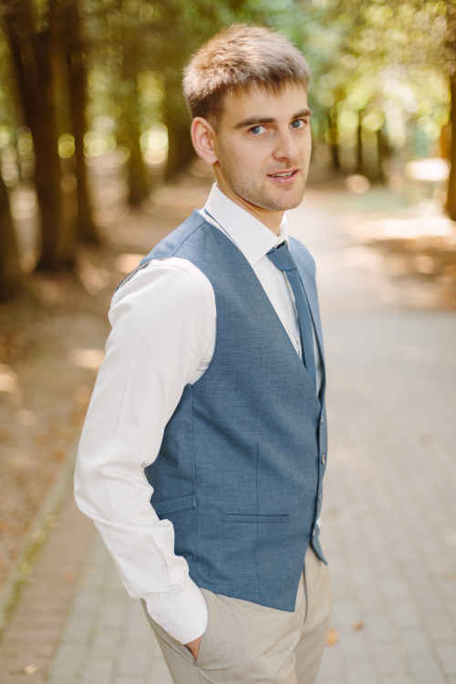

- Oleksii Romanchenko
- Phone: +375299546396, Email: romanchenko.oleksii@gmail.com
- I'm full stack .net developer, but now I realize that front-end development has impressing high tempo evolvement.
When I saw Angular 2+ possibilities I decided to requalify in front-end developer. I was impressed by Angular and Typescript as well
- My skills: C#, .NET Framework, .NET Core, HTML5, CSS3, JS, JQuery
- https://github.com/AlexeyRomanchenko/maneur-dispatcher-app
- full stack .net developer with 3 years experience in asp.net mvc. I have experience with developing global monitoring system of mining machinery.
- IT academy (asp.net development,C#) , Dniepropetrovsk national university of railway transport (Automation engineer)
- My english skills: Upper-Intermediate. I've been studying at Polyglot english school during last year.